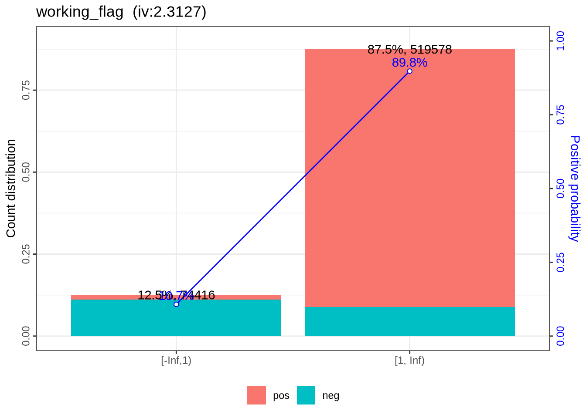
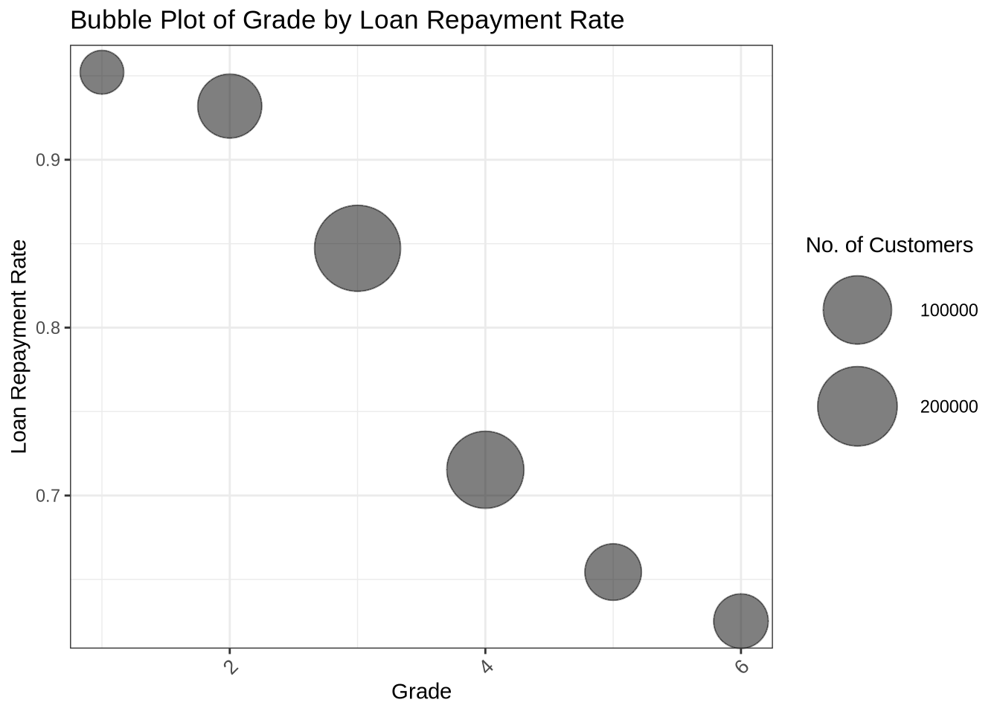
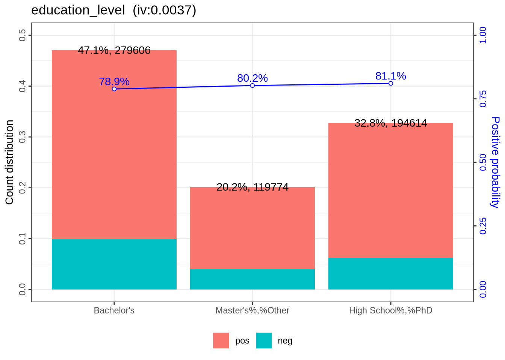
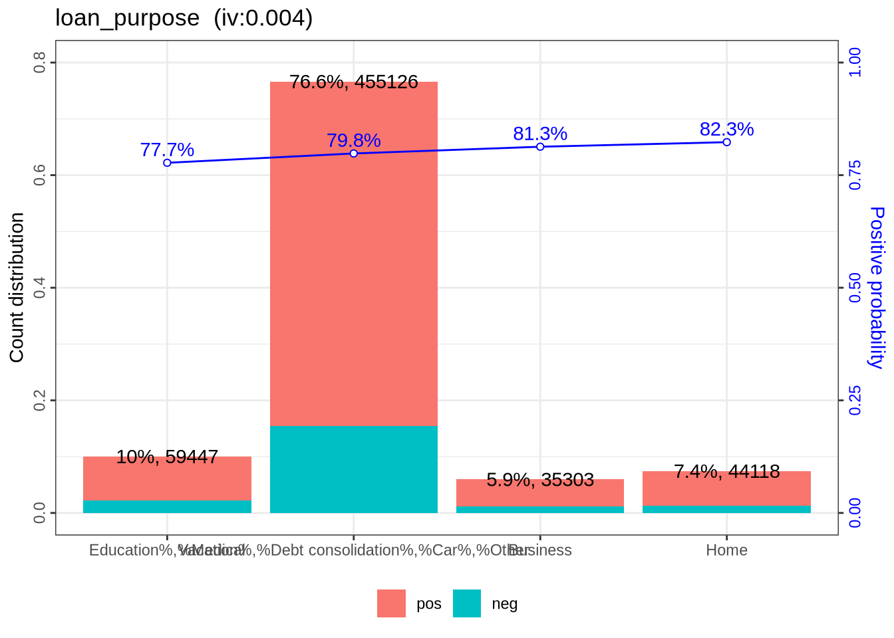
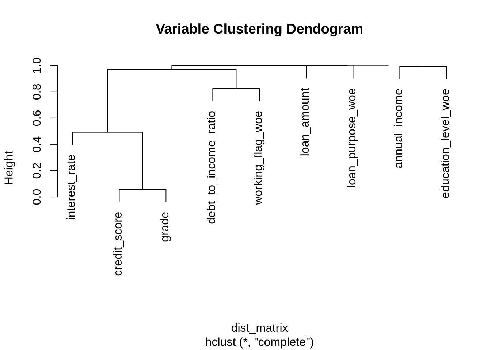
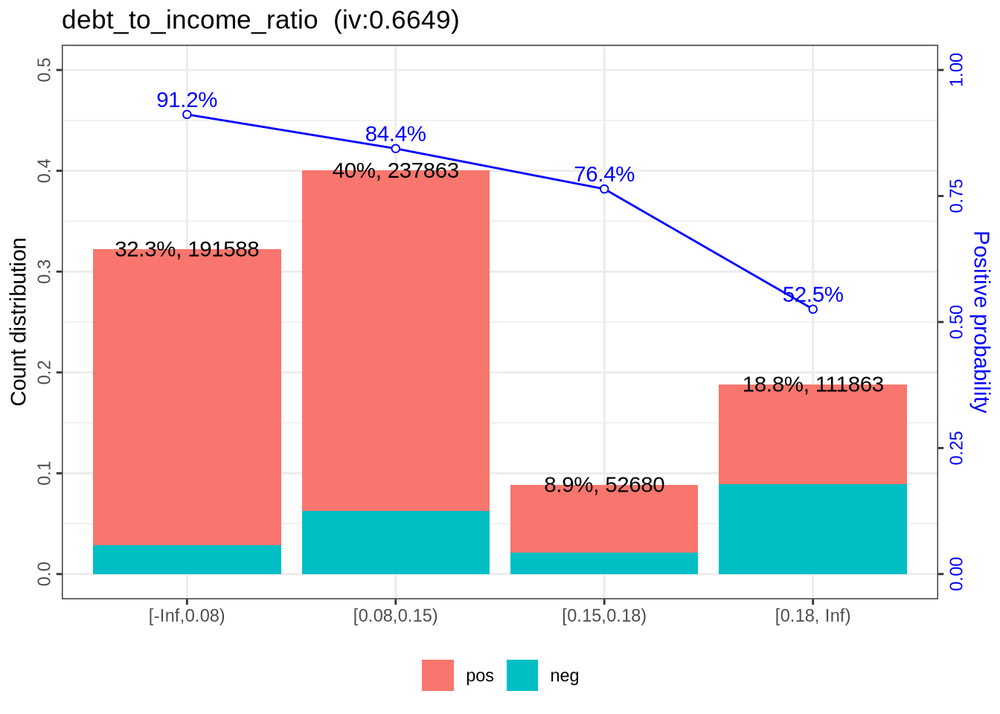
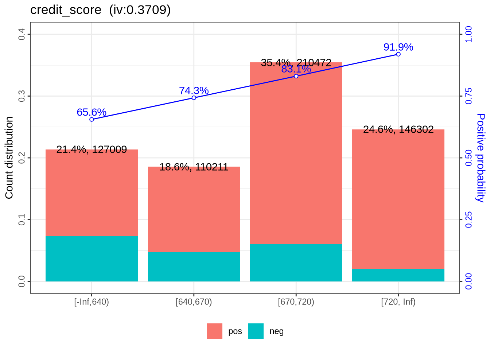
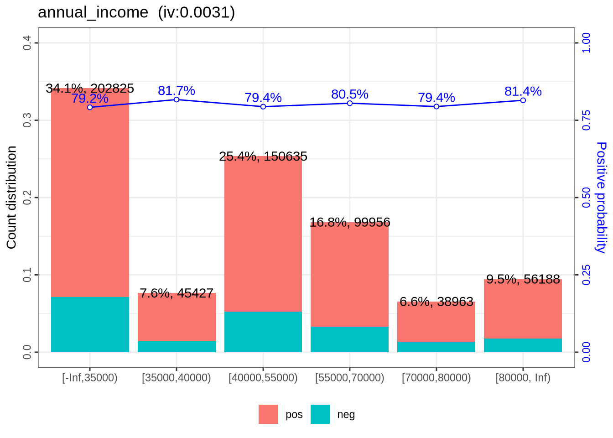
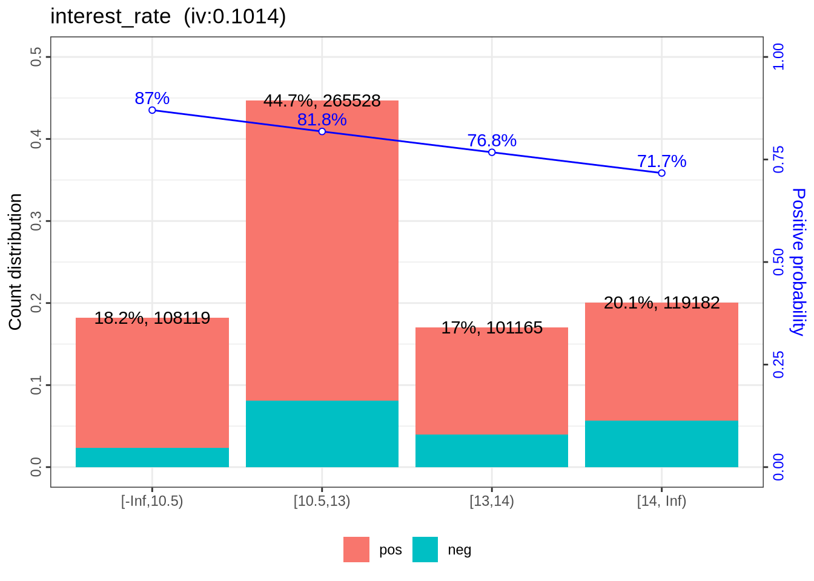

| variable | info_value |
|---|---|
| employment_status | 2.5178449 |
| debt_to_income_ratio | 1.0405779 |
| loan_amount | 0.5834913 |
| annual_income | 0.5819700 |
| credit_score | 0.4602449 |
| grade_subgrade | 0.3518534 |
| interest_rate | 0.1615389 |
| loan_purpose | 0.0041325 |
| education_level | 0.0040612 |
| gender | 0.0003436 |
| marital_status | 0.0000426 |
Credit Risk Scorecard Model - Feature Engineering
Variable Selection
We begin this journey by selecting variables for model development using regression and tree-based techniques.
First, we will look at Information Value.
Information Value
In this section, we will calculate Information Value to filter variables for regression / scorecard modeling.
If this wasn’t a kaggle competition with a synthetic dataset, we would have only selected variables with IV > 0.02. This would have given us following variables:
- Employment Status
- DTI
- Loan Amount
- Annual Income
- Credit Score
- Grade Sub-grade
- Interest Rate
But since it is a kaggle competition, we would not be enforcing such a hard criterion for filtering variables. We will combine IV with our business intuition to select following variables:
- Employment Status
- DTI
- Loan Amount
- Annual Income
- Credit Score
- Grade Sub-grade
- Interest Rate
- Loan Purpose
- Education Level
Why have we added Loan Purpose and Education Level? We have added them back based on our EDA analysis in which we saw a clear and noticeable difference in loan repayment rate between different classes of these variables. Also, they make business intuitive sense as well.
Loan Purpose will help us understand if a loan taken for a given purpose has higher likelihood of repayment or not. Education Level can be an indicator of future employability and income of the customer reducing the likelihood of loan default. Also, there might be an interaction between annual income and education level. We will investigate this in later phase.
Also, one thing to note here is that IV of Employment Status and DTI is very suspiciously high (>0.5). An IV this high is rare in real-world credit datasets. It signals:
- Possibility of data leakage
- Variable may be directly encoding the target
- Or near-direct proxy for “good/bad”
But since this is a synthetic dataset on Kaggle, it can be expected. For sanctity sake, we will also perform data leakage check later on.
Clustering-based Filtering
In this section, we will perform process to filter variables using Hierarchical Clustering.
Before performing clustering, we will have to transform categorical variables to numerical variables. After IV-based filtering, there are four categorical variables: Employment Status, Grade Sub-grade, Education Level and Loan Purpose
First let’s transform Employment Status. As we have seen in our EDA, the loan repayment rate is very high for three classes - Retired, Employed and Self-employed. Similarly, it is ver low for remaining two classes - Student and Unemployed. Given the clear separation, we can merge them into two groups and then apply WOE encoding to ensure that we don’t lose any information.
✔ Binning on 593994 rows and 2 columns in 00:00:00$working_flag
Now, we will transform Grade Sub-grade variable. As we have seen in our EDA analysis, they have monotonic relationship with loan repayment rate. Also, it is an ordinal variable with clear order: A>B>C>D>E>F. Therefore, we will try to merge the sub-grades into one grade and then convert into an ordinal factor variable. Then finally into a numeric variable.
After that during feature engineering phase, we will try to find which transformation or encoding will be suitable for it - WOE Encoding or Target Encoding.

As we can see from above chart, the Sub-grades have been merged to their Grade and converted to numeric.
Next we will transform both Education Level and Loan Purpose. Both of these variables have multiple classes and don’t have definite order. There is slight variation in loan repayment rate of each class of these variables. Like previously we have done with Employment Status, we would be applying WOE encoding to convert them to numeric while preserving the signal embedded in them.
✔ Binning on 593994 rows and 3 columns in 00:00:02$education_level
$loan_purpose
From the above charts, we can see that we are able to maintain monotonic relationship through WOE Encoding. It automatically merges classes within a variable to attain that. This will be used while performing modeling using logistic regression as well. Now, we will perform Hierarchical Clustering.
✔ Binning on 593994 rows and 4 columns in 00:00:02✔ Woe transformating on 593994 rows and 3 columns in 00:00:03✔ Woe transformating on 254569 rows and 3 columns in 00:00:01
From the above dendogram plot, we can see that there are two key clutsters as shown below:
- Credit Score, Grade, and Interest Rate
- Debt to Income Ratio and Working Flag
From each of these clusters, we can select one variable with highest IV value. But before doing that we can also check their correlation and our business intuition. Based on both of them, we will decide which variables need to be kept for further processing and feature engineering.
We will recalculate Information Value (IV) to determine if we need to make a decision about filtering out any variables from each of the above clusters.
| variable | cluster | info_value |
|---|---|---|
| annual_income | 1 | 0.5819700 |
| debt_to_income_ratio | 2 | 1.0405779 |
| credit_score | 3 | 0.4602449 |
| grade | 3 | 0.3471607 |
| interest_rate | 3 | 0.1615389 |
| loan_amount | 4 | 0.5834913 |
| education_level_woe | 5 | 0.0037469 |
| loan_purpose_woe | 6 | 0.0039990 |
| working_flag_woe | 7 | 2.3126953 |
Based on above table, we will keep all the variables for now. Though we should keep in mind that we can eliminate two variables from Cluster 3 if required later on.
Multicollinearity
In this section, we will perform filtering using Variance Inflation Factor (VIF) statistic. VIF measures how much the variance of a regression coefficient is inflated due to multicollinearity between predictors.
If a variable is strongly correlated with other predictors, its coefficient becomes unstable and its standard error becomes larger. VIF quantifies this effect.
| variable | vif |
|---|---|
| credit_score | 9.545585 |
| grade | 9.116141 |
| interest_rate | 1.408228 |
| working_flag_woe | 1.040375 |
| debt_to_income_ratio | 1.033953 |
| loan_purpose_woe | 1.000587 |
| education_level_woe | 1.000533 |
| loan_amount | 1.000224 |
| annual_income | 1.000106 |
Based on above table, we can finally make the decision to drop Grade due to multicollinearity (VIF > 5) with Credit Score and Interest Rate. Also, Grade can be considered as discretized version of credit score which adds no information to our model. Therefore, we will be dropping Grade from our model.
Let’s recalculate VIF after dropping Grade.
| variable | vif |
|---|---|
| credit_score | 1.420289 |
| interest_rate | 1.408224 |
| working_flag_woe | 1.040292 |
| debt_to_income_ratio | 1.033945 |
| loan_purpose_woe | 1.000584 |
| education_level_woe | 1.000533 |
| loan_amount | 1.000222 |
| annual_income | 1.000103 |
As we can see from above table, now VIF for all variables is under 2.
Data Leakage Check
In this section, we will perform three tests to confirm if there is any data leakage with regards to two variables - Working Flag and Debt to Income Ratio.
In first test, we will compare IV using two versions of the variable. If IV collapses drastically under a noisy or lagged version, the original variable leaks.
$original
variable info_value
<char> <num>
1: debt_to_income_ratio 1.040578
$noisy
variable info_value
<char> <num>
1: noisy 0.00006611242$original
variable info_value
<char> <num>
1: working_flag_woe 2.312695
$noisy
variable info_value
<char> <num>
1: noisy 0.00009213036From IV test, it looks like there is a data leakage issue for both variables.
Let’s move to second test using correlation.
In this test, only Working Flag failed it as its correlation was greater than 0.5.
In the final test, we will plot WoE bins.
✔ Binning on 593994 rows and 2 columns in 00:00:01$debt_to_income_ratio
✔ Binning on 593994 rows and 2 columns in 00:00:00$working_flag_woeIn this test also, Working Flag failed the test as it has a perfect monotonic curve shape.
Given that this is a synthetic dataset on Kaggle, we will be keeping both these variables in our dataset as they have very strong predictive power.
LASSO
LASSO (Least Absolute Shrinkage and Selection Operator) is a regularized version of logistic or linear regression that performs:
- Variable Selection
- Coefficient Shrinkage
- Model Simplification
- Prevention of Overfitting
It is widely used in credit-risk modeling to identify the strongest predictors before performing logistic regression.
Let’s LASSO.
| variable |
|---|
| annual_income |
| debt_to_income_ratio |
| credit_score |
| interest_rate |
| education_level_woe |
| loan_purpose_woe |
| working_flag_woe |
After performing variable selection using LASSO, only variable to be dropped is Loan Amount. It makes business intuitive sense as well because it is a representation of lender’s decision and not borrower’s quality.
Feature Engineering
In this section, we will transform final set of variables to make them suitable for Logistic Regression.
First, we will perform of WOE Binning of numeric variables - DTI, Annual Income, Interest Rate and Credit Score.
✔ Binning on 593994 rows and 5 columns in 00:00:03$debt_to_income_ratio
$credit_score
$annual_income
$interest_rate
As seen from above plot, we can see that the positive probability has monotonic relationship with all WoE bins of numeric variables. This will be our final transformed variables that we will use for building logistic regression model.